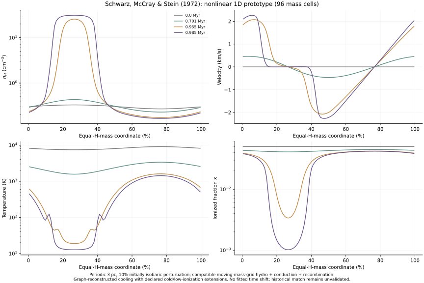
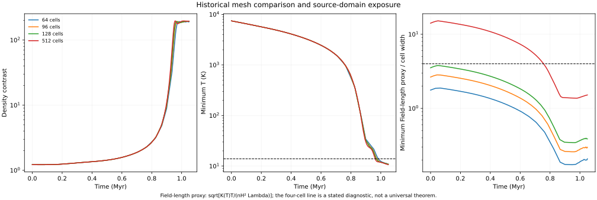

Chapter03 / Schwarz, McCray & Stein (1972) / Nonlinear prototype
Follow the gas
into a cold, dense layer.
A 10% density wave grows beyond the linear regime in a cooling 3 pc box. Moving mass cells follow the compression, while thermal conduction, recombination and shock heating act together.
A nonlinear numerical prototype, using 96 mass cells for the displayed profiles. There is no Riemann solver. The method uses pressure forces, compatible pressure work and compression-only artificial viscosity. Figures 3–6 motivate the outputs; original cooling inputs, timing and front resolution remain imperfect, so this is not certified historical reproduction.
Density, velocity, temperature and ionization.



At 0.985 Myr the displayed model has peak n(H) ≈ 31.1 cm⁻³, a density contrast ≈ 187, minimum temperature ≈ 12.7 K and minimum ionization fraction ≈ 0.0010. The surrounding warm minimum-density gas is about 1430 K. These are computed quantities, not prescribed cloud conditions.
The paper’s text gives approximate cloud values of 15 K, x ≈ 0.002, a 0.007 pc extent and 20% of the mass, with an intercloud temperature about 1,800 K. Our density-excess FWHM is 0.0078 pc, while the broader selection T < 100 K and n > 10 times the mean gives 0.0155 pc and 28.1% of the mass. These definitions need not coincide with the original cloud edge.
The condensation timing differs: by 0.955 Myr this prototype already has a strongly condensed layer, whereas the corresponding original profile is still growing. The resemblance of the late cloud does not establish pointwise agreement throughout the evolution.
A classical Lagrangian calculation.
The periodic domain contains a sinusoidal physical-space density perturbation of amplitude 0.1 and wavelength 3 pc, with mean n(H) = 0.3 cm⁻³. The unperturbed temperature is 8,200 K, x = 0.05, and neutral He/H = 0.1. Initial pressure is uniform, so the local temperature varies inversely with density; velocities start at zero.
Equal-H-mass cells move with the gas. A compatible midpoint pressure-work update balances changes in internal and kinetic energy. Compression-only quadratic and linear artificial viscosity handle shocks. Conduction uses a conservative periodic implicit solve, and a coupled local energy/recombination solve accounts for radiative losses and changing particle number.
This is not the recovered original program. The paper describes von Neumann–Richtmyer viscosity and 100–200 spatial mesh points. The 64/96-cell cases explore historical-scale calculations below that reported range; the 128-cell case lies within it. We keep these experiments separate from any claim about the authors’ exact mesh.
The semi-implicit conduction update is backward Euler. We therefore do not claim global second-order time accuracy; timestep refinement is measured directly. No temperature floor, clipped density, imposed cold layer or fitted time shift is used.
Compare mesh counts without declaring every front resolved.



At 0.985 Myr the 96-to-128 density-profile L1 difference on mass coordinate is about 3.2%; 128 versus 512 differs by about 4.7%. Halving the timestep in the 96-cell calculation changes the density profile by about 0.02%. Profiles are compared without shifting the cloud.
Spatial front resolution is still limited. The auxiliary 512-cell run reaches a minimum Field-length proxy of only 1.37 cells. The proxy is √[K(T)T/(n²Λ)]. A small difference between these cloud profiles is not proof that the thin conductive interface or a continuum solution is fully resolved.
All 33 numerical self-checks pass, including compatible hydro energy accounting, a periodic conduction Fourier mode, independent cooling/recombination ODEs, the small-amplitude linear limit, box length, momentum, positivity and timestep agreement. The unmet spatial-resolution diagnostic is recorded separately and is not counted as a passed check.
Track where the cooling input is extended.
The nonlinear cooling table adds 12 warm-end readings to the earlier 39 points from Figure 1. These cover the locally warmer cells in the initially isobaric wave. The earlier linear input and results are preserved.
Below the lowest graph temperature, about 13.93 K, the model uses a continuous C II-like asymptote with exp(−92/T), neutral-collider T⁰ and electron-collider T⁻¹ᐟ² factors. Below x = 0.001 the two low-ionization curves continue to a nonnegative neutral-collider contribution. These are explicit extrapolations, not recovered historical coefficients.
The 96-cell density contrast first reaches 100 near 0.948 Myr. It enters the cold temperature extension near 0.974 Myr and the low-ionization extension near 0.986 Myr. Thus the initial formation of the high-contrast layer precedes those extensions, while the later cloud state depends on them. Exposure of each accepted state is recorded in the report.
Changing the cold electron temperature power from −1/2 to 0 is included as a sensitivity probe. It does not bound every uncertainty in the historical cooling rates. The recombination fit, normalization caveat and proof note described in the linear exhibit remain relevant.
Run the nonlinear study.
Save the four nonlinear files plus reproduce.py, config.json, cooling-readings.csv and requirements.txt from the linear exhibit. No source PDF is required after installing the pinned dependencies.
python3 -m venv .venv
.venv/bin/python -m pip install -r requirements.txt
OPENBLAS_NUM_THREADS=1 .venv/bin/python reproduce-nonlinear.pyThe single-run solver also accepts a chosen mesh and end time, for example:
.venv/bin/python nonlinear.py --cells 96 --end 1.05Schwarz, McCray & Stein (1972): source paper ↗
Code, text and generated-data licenses remain unselected. Original paper rights are separate.